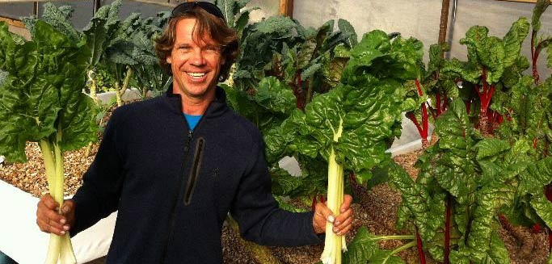

⚓ THE FISH ⚓
Fish are the power house of an aquaponics system, they provide the nutrients for the plants and if your growing edible fish, then they also provide protein for yourself. By following simple guidelines, growing fish from fingerling size to ready-to-eat fish can be extremely simple.

🍏 THE PLANTS 🍏
The huge list of successful plants are basically anything that grows well above soil and love to have their roots wet. Plants such as lettuce, cucumbers, tomatoes, and leafy green vegetables thrive really well with the aquaponics system.
Producing sustainable food systems for communities around THE GLOBE!
• Located in Austin, Texas since 2015 •